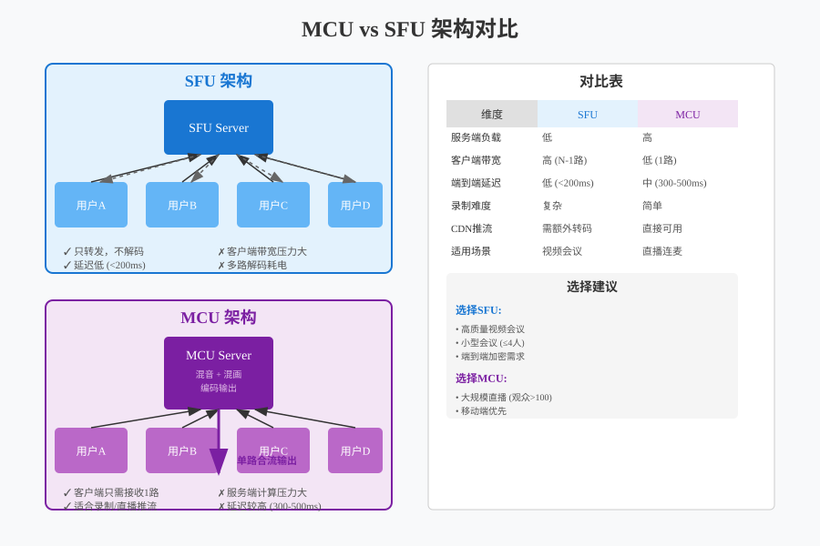
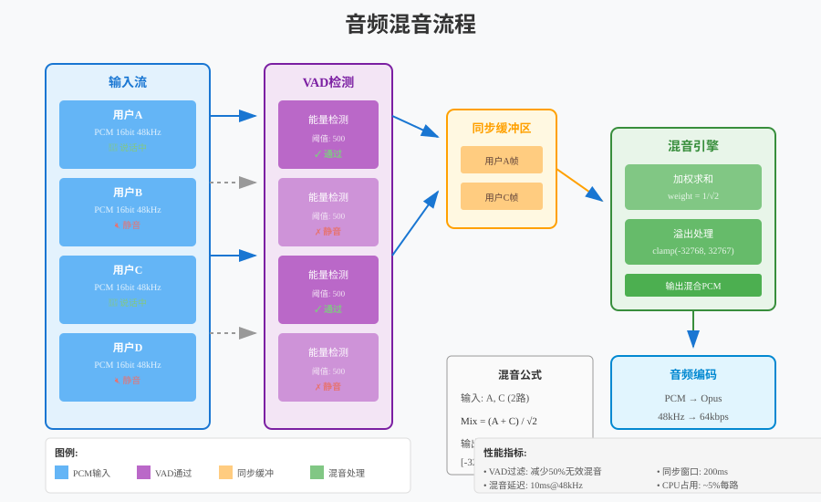
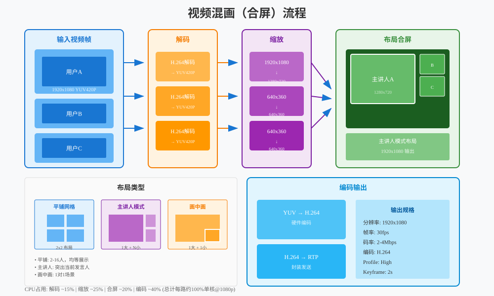
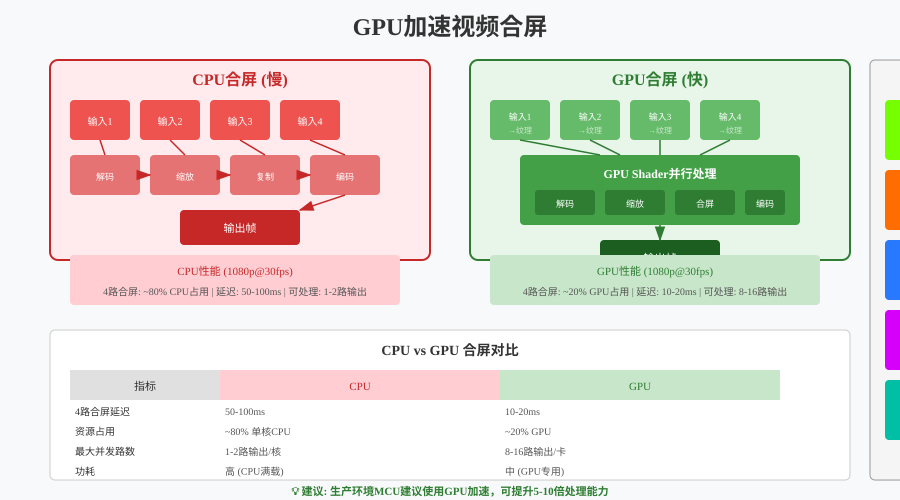
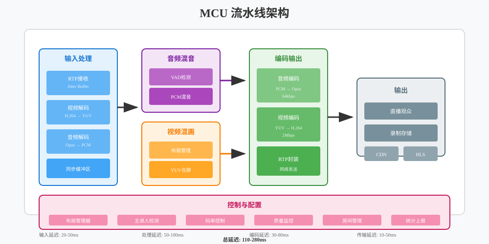

音视频开发实战
第24章：MCU 混音混画详解
本章目标：理解 MCU 架构原理，掌握音频混音和视频混画的核心技术。
在上一章（第23章）中，我们实现了多人房间的客户端，使用 SFU 架构实现了灵活的多路视频管理。但是，当会议人数增加到一定规模，或者需要进行云端录制时，SFU 的局限性就开始显现。
本章将学习 MCU（Multipoint Control Unit，多点控制单元） 架构，这是处理大规模会议和云端录制的核心技术。通过 MCU，服务器可以将多路音视频流混合成一路合流，大幅降低客户端的带宽和性能消耗。
学习本章后，你将能够： - 理解 MCU 与 SFU 的区别和适用场景 - 掌握音频混音的数学原理和溢出处理 - 理解视频混画的布局设计和 GPU 加速 - 设计 MCU 的完整处理流水线 - 实现一个简单的 MCU 服务器
目录
1. 为什么需要 MCU？
1.1 SFU 的局限性
在第22章中，我们学习了 SFU 架构，它的核心优势是服务器只转发不解码，延迟低、性能好。但当遇到以下场景时，SFU 就显得力不从心了：
场景 1：大规模会议（50+ 人）
使用 SFU 时，每个参与者需要接收其他所有参与者的视频流：
50 人会议，每人需要接收 49 路视频
假设每路 500kbps，每人下行带宽 = 49 × 500kbps = 24.5 Mbps普通家庭宽带（通常 20-100 Mbps）根本无法支撑这样的带宽需求。
场景 2：移动端弱网环境
移动设备的网络环境复杂，4G/5G 信号不稳定，WiFi 质量参差不齐。SFU 要求客户端接收多路流，在弱网环境下很容易出现卡顿、花屏。
场景 3：云端录制需求
如果要将整场会议录制下来，使用 SFU 需要： - 同时录制每一路单独的流 - 录制后再进行离线混流合成 - 流程复杂，实时性差
1.2 MCU vs SFU 对比

SFU（选择性转发单元）：
┌─────────────────────────────────────────────────────────┐
│ SFU 架构 │
├─────────────────────────────────────────────────────────┤
│ │
│ 用户 A ──→┌─────────┐←── 用户 B │
│ 发送1路 │ Server │ 收到1路 (A的) │
│ │ (转发) │ │
│ 用户 B ──→│ 不解码 │←── 用户 A │
│ 发送1路 │ 不编码 │ 收到1路 (B的) │
│ └─────────┘ │
│ │
│ 特点: N人会议，每人接收 N-1 路流 │
│ 延迟: 极低 (< 50ms) │
│ 适用: 小型会议 (4-20人) │
└─────────────────────────────────────────────────────────┘MCU（多点控制单元）：
┌─────────────────────────────────────────────────────────┐
│ MCU 架构 │
├─────────────────────────────────────────────────────────┤
│ │
│ 用户 A ──┐ │
│ ↓ │
│ 用户 B ──→┌─────────┐ │
│ │ Server │ │
│ 用户 C ──→│ (混音 │──→ 所有用户收到 1 路合流 │
│ │ 混画) │ 包含 A+B+C │
│ 用户 D ──→│ 解码→合成→编码│ │
│ └─────────┘ │
│ │
│ 特点: N人会议，每人只接收 1 路合流 │
│ 延迟: 较高 (100-500ms) │
│ 适用: 大型会议、直播、录制 │
└─────────────────────────────────────────────────────────┘1.3 三种架构详细对比
| 特性 | Mesh (P2P) | SFU | MCU |
|---|---|---|---|
| 服务器角色 | 仅信令 | 转发 | 混音混画 |
| 服务器 CPU | 极低 | 低 | 高 |
| 服务器带宽 | 低 | 高 | 低 |
| 客户端上行 | 高 | 低 | 低 |
| 客户端下行 | 高 | 高 | 极低 |
| 客户端 CPU | 高 | 中等 | 低 |
| 延迟 | 低 | 极低 (<50ms) | 高 (100-500ms) |
| 布局灵活性 | 高 | 高 | 低 |
| 最大人数 | 3-4 | 20-50 | 100+ |
| 云端录制 | 困难 | 复杂 | 简单 |
1.4 适用场景分析
选择 SFU 的场景： - 视频会议（4-20 人） - 需要灵活布局（用户可以自定义谁大谁小） - 对延迟敏感（远程协作、在线教育） - 参与者的设备和网络较好
选择 MCU 的场景： - 大型会议（50+ 人） - Webinar / 大型直播 - 移动端弱网环境 - 需要云端录制存档 - 需要向 CDN 推流（HLS/DASH）
混合架构（SFU + MCU）：
现代大型会议系统通常采用混合架构：
┌─────────────────────────────────────────────────────────┐
│ 混合架构 │
├─────────────────────────────────────────────────────────┤
│ │
│ ┌─────────┐ │
│ │ SFU │←── 互动参与者 (10-20人) │
│ │ Server │ 低延迟、灵活布局 │
│ └────┬────┘ │
│ │ │
│ ↓ 转发 │
│ ┌─────────┐ │
│ │ MCU │←── 大规模观众 (1000+人) │
│ │ Server │ 接收合流，也可录制成 HLS │
│ └────┬────┘ │
│ │ │
│ ↓ CDN │
│ ┌─────────┐ │
│ │ HLS/CDN│←── 仅观看用户 │
│ └─────────┘ │
└─────────────────────────────────────────────────────────┘核心参与者使用 SFU 进行实时互动，普通观众通过 MCU 接收合流或 CDN 直播。
2. 音频混音原理
2.1 为什么需要混音？
在多路通话中，每个参与者需要同时听到其他所有参与者的声音。如果不进行混音，就需要在客户端同时播放多个独立的音频流，这会带来两个问题：
- 同步问题：多个独立流的播放难以精确同步，会产生回声或重叠
- 资源消耗：同时解码和播放多路音频，对移动端是负担
混音的本质：将多路音频的 PCM 数据按采样点相加，生成一路混合后的音频。
2.2 PCM 数据相加原理
音频混音的核心是数学上的采样点相加：

基本原理：
假设有两个音频流：
- 流 A 的采样点序列: [a₁, a₂, a₃, ...]
- 流 B 的采样点序列: [b₁, b₂, b₃, ...]
混音后的采样点序列: [a₁+b₁, a₂+b₂, a₃+b₃, ...]用代码表示：
namespace live {
// 简单的两路混音 (16-bit PCM)
void MixAudioSimple(const int16_t* input1,
const int16_t* input2,
int16_t* output,
size_t sample_count) {
for (size_t i = 0; i < sample_count; ++i) {
int32_t mixed = static_cast<int32_t>(input1[i])
+ static_cast<int32_t>(input2[i]);
// 溢出保护：硬限幅
if (mixed > INT16_MAX) {
output[i] = INT16_MAX;
} else if (mixed < INT16_MIN) {
output[i] = INT16_MIN;
} else {
output[i] = static_cast<int16_t>(mixed);
}
}
}
} // namespace live2.3 溢出处理策略
当多路音频叠加时，很容易出现溢出问题。例如，两路音量都接近最大值的音频相加，结果会超出 16-bit PCM 的范围（-32768 ~ 32767）。
策略 1：硬限幅 (Hard Clipping)
最简单的溢出处理，超出范围直接截断：
// 硬限幅
int16_t Clip(int32_t value) {
if (value > INT16_MAX) return INT16_MAX;
if (value < INT16_MIN) return INT16_MIN;
return static_cast<int16_t>(value);
}优点：简单、计算量小
缺点：会产生削波失真，音质下降
策略 2：动态压缩 (Dynamic Compression)
根据总音量动态调整混音系数：
namespace live {
class AudioMixer {
public:
// 动态压缩混音
void MixWithCompression(const std::vector<const int16_t*>& inputs,
int16_t* output,
size_t sample_count);
private:
// 计算自适应增益
float CalculateAttenuation(size_t active_stream_count) {
// 经验公式：增益 = 1 / sqrt(N)
// N 越大，每路的音量衰减越多
if (active_stream_count <= 1) return 1.0f;
return 1.0f / std::sqrt(static_cast<float>(active_stream_count));
}
};
void AudioMixer::MixWithCompression(
const std::vector<const int16_t*>& inputs,
int16_t* output,
size_t sample_count) {
const size_t stream_count = inputs.size();
const float attenuation = CalculateAttenuation(stream_count);
for (size_t i = 0; i < sample_count; ++i) {
float mixed = 0.0f;
for (const auto* input : inputs) {
mixed += static_cast<float>(input[i]) * attenuation;
}
// 最终限幅
output[i] = Clip(static_cast<int32_t>(mixed));
}
}
} // namespace live优点：音质较好，多人混音时自动降低音量
缺点：计算量稍大，需要浮点运算
策略 3：自适应归一化 (AGC - Automatic Gain Control)
实时监测音频峰值，动态调整混音系数：
namespace live {
class AdaptiveMixer {
public:
// 自适应混音
void MixAdaptive(const std::vector<AudioStream>& inputs,
int16_t* output,
size_t sample_count);
private:
// 计算当前帧的峰值
int16_t CalculatePeak(const int16_t* data, size_t count);
// 自适应增益 (平滑调整)
float current_gain_ = 1.0f;
static constexpr float kGainAttack = 0.9f; // 快速降低
static constexpr float kGainDecay = 0.999f; // 缓慢恢复
};
void AdaptiveMixer::MixAdaptive(
const std::vector<AudioStream>& inputs,
int16_t* output,
size_t sample_count) {
// 第一遍：计算原始混音和峰值
std::vector<int32_t> mixed(sample_count, 0);
int32_t max_abs_value = 0;
for (const auto& stream : inputs) {
if (!stream.is_muted && stream.is_active) {
for (size_t i = 0; i < sample_count; ++i) {
mixed[i] += stream.data[i];
max_abs_value = std::max(max_abs_value,
std::abs(mixed[i]));
}
}
}
// 计算需要的增益
float target_gain = 1.0f;
if (max_abs_value > INT16_MAX) {
target_gain = static_cast<float>(INT16_MAX) / max_abs_value;
}
// 平滑调整增益
if (target_gain < current_gain_) {
current_gain_ = target_gain * kGainAttack
+ current_gain_ * (1 - kGainAttack);
} else {
current_gain_ = target_gain * (1 - kGain_decay)
+ current_gain_ * kGainDecay;
}
// 应用增益输出
for (size_t i = 0; i < sample_count; ++i) {
output[i] = Clip(static_cast<int32_t>(mixed[i] * current_gain_));
}
}
} // namespace live2.4 VAD 语音检测优化
在多人会议中，通常只有少数人同时说话。我们可以使用 VAD（Voice Activity Detection，语音活动检测） 来识别谁在说话，只对活跃的音频流进行混音。
VAD 的基本原理：
1. 计算音频帧的能量（采样点的平方和）
2. 与阈值比较：能量 > 阈值 → 有语音
3. 添加迟滞：避免在静音边界频繁切换namespace live {
class VadDetector {
public:
// 检测是否有语音活动
bool Detect(const int16_t* pcm_data, size_t sample_count);
// 设置阈值 (默认 -40dB)
void SetThreshold(float db_threshold);
private:
float energy_threshold_ = 0.01f; // -40dB
int hold_frames_ = 0; // 保持计数
static constexpr int kHoldFrames = 10; // 保持10帧
};
bool VadDetector::Detect(const int16_t* pcm_data, size_t sample_count) {
// 计算帧能量
float energy = 0.0f;
for (size_t i = 0; i < sample_count; ++i) {
float sample = static_cast<float>(pcm_data[i]) / INT16_MAX;
energy += sample * sample;
}
energy /= sample_count;
if (energy > energy_threshold_) {
hold_frames_ = kHoldFrames;
return true;
}
// 迟滞：保持一段时间
if (hold_frames_ > 0) {
--hold_frames_;
return true;
}
return false;
}
// 在混音器中使用 VAD
class SmartMixer {
public:
void AddStream(const std::string& stream_id,
const int16_t* pcm_data,
size_t sample_count);
void Mix(int16_t* output, size_t sample_count);
private:
struct StreamInfo {
std::vector<int16_t> buffer;
VadDetector vad;
bool is_active = false;
};
std::unordered_map<std::string, StreamInfo> streams_;
};
} // namespace liveVAD 的优化效果： - 减少计算量：只混音活跃的流 - 降低底噪：静音流不混入噪声 - 提升音质：避免无效音频的叠加
3. 视频混画原理
3.1 混画的基本概念
视频混画（Video Composition）是将多路视频按照一定布局合并成一路视频的过程。与音频混音不同，视频混画涉及二维空间的操作，需要考虑：
- 布局设计：每个视频放在什么位置，多大尺寸
- 图像处理：缩放、裁剪、格式转换
- 合成算法：多路视频的叠加、Alpha 混合
3.2 常见布局类型

布局 1：网格布局 (Grid)
┌─────────┬─────────┬─────────┐
│ A │ B │ C │
├─────────┼─────────┼─────────┤
│ D │ E │ F │
└─────────┴─────────┴─────────┘
特点：所有参与者平等显示
适用：小型会议、讨论模式
计算：自动计算行列数，均匀分配空间网格布局计算算法：
namespace live {
struct VideoCell {
int x, y; // 左上角坐标
int width, height; // 尺寸
std::string stream_id;
};
class GridLayout {
public:
// 计算网格布局
std::vector<VideoCell> Calculate(int stream_count,
int canvas_width,
int canvas_height);
private:
// 计算最佳行列数
void GetGridSize(int count, int* rows, int* cols) {
*cols = static_cast<int>(std::ceil(std::sqrt(count)));
*rows = static_cast<int>(std::ceil(
static_cast<double>(count) / *cols));
}
};
std::vector<VideoCell> GridLayout::Calculate(
int stream_count,
int canvas_width,
int canvas_height) {
std::vector<VideoCell> cells;
int rows, cols;
GetGridSize(stream_count, &rows, &cols);
int cell_width = canvas_width / cols;
int cell_height = canvas_height / rows;
// 保持 16:9 比例
float target_aspect = 16.0f / 9.0f;
float cell_aspect = static_cast<float>(cell_width) / cell_height;
int final_width, final_height;
if (cell_aspect > target_aspect) {
// 太宽，以高度为基准
final_height = cell_height;
final_width = static_cast<int>(cell_height * target_aspect);
} else {
// 太高，以宽度为基准
final_width = cell_width;
final_height = static_cast<int>(cell_width / target_aspect);
}
// 居中计算
for (int i = 0; i < stream_count; ++i) {
int row = i / cols;
int col = i % cols;
int x = col * cell_width + (cell_width - final_width) / 2;
int y = row * cell_height + (cell_height - final_height) / 2;
cells.push_back({x, y, final_width, final_height, ""});
}
return cells;
}
} // namespace live布局 2：主讲人模式 (Speaker View)
┌─────────────────────────────────────┐
│ │
│ 主讲人 │
│ (大图 70%) │
│ │
├───────────┬───────────┬─────────────┤
│ A │ B │ C │
│ (小图) │ (小图) │ (小图) │
└───────────┴───────────┴─────────────┘
特点：主讲人占据主要区域，其他人小图显示
适用：讲座、培训、直播
动态：根据语音活动自动切换主讲人布局 3：画中画模式 (PIP - Picture In Picture)
┌─────────────────────────────────────┐
│ │
│ │
│ 主画面 │
│ (对方视频) │
│ │
│ ┌──────────────┐ │
│ │ │ │
│ │ 小窗 │ │
│ │ (自己画面) │ │
│ └──────────────┘ │
│ │
└─────────────────────────────────────┘
特点：小窗悬浮在主画面上
适用：1v1 通话、小班课
位置：通常右下角，可拖动3.3 YUV 图像处理
视频混画需要对图像进行缩放、裁剪和格式转换。在 MCU 中，通常使用 YUV420P 格式进行处理。
YUV420P 格式回顾：
YUV420P 是一种平面格式：
- Y 平面：亮度信息，分辨率 = width × height
- U 平面：色度信息，分辨率 = width/2 × height/2
- V 平面：色度信息，分辨率 = width/2 × height/2
总大小 = width × height × 1.5YUV 缩放算法：
namespace live {
// YUV420P 图像缩放 (双线性插值)
class YuvScaler {
public:
// 缩放 YUV420P 图像
void Scale(const uint8_t* src_y, const uint8_t* src_u,
const uint8_t* src_v,
int src_width, int src_height,
uint8_t* dst_y, uint8_t* dst_u, uint8_t* dst_v,
int dst_width, int dst_height);
private:
// 缩放单平面
void ScalePlane(const uint8_t* src, int src_width,
int src_height,
uint8_t* dst, int dst_width, int dst_height);
};
void YuvScaler::ScalePlane(const uint8_t* src, int src_width,
int src_height,
uint8_t* dst, int dst_width,
int dst_height) {
const float x_ratio = static_cast<float>(src_width) / dst_width;
const float y_ratio = static_cast<float>(src_height) / dst_height;
for (int y = 0; y < dst_height; ++y) {
for (int x = 0; x < dst_width; ++x) {
// 源坐标
float src_x = x * x_ratio;
float src_y = y * y_ratio;
// 双线性插值
int x0 = static_cast<int>(src_x);
int y0 = static_cast<int>(src_y);
int x1 = std::min(x0 + 1, src_width - 1);
int y1 = std::min(y0 + 1, src_height - 1);
float fx = src_x - x0;
float fy = src_y - y0;
// 四个角的像素值
uint8_t p00 = src[y0 * src_width + x0];
uint8_t p01 = src[y0 * src_width + x1];
uint8_t p10 = src[y1 * src_width + x0];
uint8_t p11 = src[y1 * src_width + x1];
// 插值计算
float val = p00 * (1-fx) * (1-fy)
+ p01 * fx * (1-fy)
+ p10 * (1-fx) * fy
+ p11 * fx * fy;
dst[y * dst_width + x] = static_cast<uint8_t>(val);
}
}
}
} // namespace live注意：实际生产环境通常使用 FFmpeg 的
libswscale 或 GPU 加速，而不是纯 CPU 实现。
3.4 Alpha 混合与边框
为了让混画效果更好看，通常会在视频之间添加边框，并可能使用圆角或阴影效果。
namespace live {
// 将一路视频复制到画布指定位置
void CopyToCanvas(const uint8_t* src_y, const uint8_t* src_u,
const uint8_t* src_v,
int src_width, int src_height,
uint8_t* canvas_y, uint8_t* canvas_u,
uint8_t* canvas_v,
int canvas_width, int canvas_height,
int pos_x, int pos_y) {
// 计算实际复制区域
int copy_width = std::min(src_width, canvas_width - pos_x);
int copy_height = std::min(src_height, canvas_height - pos_y);
// 复制 Y 平面
for (int y = 0; y < copy_height; ++y) {
memcpy(canvas_y + (pos_y + y) * canvas_width + pos_x,
src_y + y * src_width,
copy_width);
}
// 复制 U/V 平面 (注意 UV 是半分辨率)
int copy_uv_width = copy_width / 2;
int copy_uv_height = copy_height / 2;
int uv_canvas_width = canvas_width / 2;
int uv_src_width = src_width / 2;
int uv_pos_x = pos_x / 2;
int uv_pos_y = pos_y / 2;
for (int y = 0; y < copy_uv_height; ++y) {
memcpy(canvas_u + (uv_pos_y + y) * uv_canvas_width + uv_pos_x,
src_u + y * uv_src_width,
copy_uv_width);
memcpy(canvas_v + (uv_pos_y + y) * uv_canvas_width + uv_pos_x,
src_v + y * uv_src_width,
copy_uv_width);
}
}
// 绘制边框
void DrawBorder(uint8_t* canvas_y, uint8_t* canvas_u, uint8_t* canvas_v,
int canvas_width, int canvas_height,
int x, int y, int width, int height,
int border_width, uint8_t y_val, uint8_t u_val,
uint8_t v_val) {
// 白色边框 YUV 值 (近似)
// Y=255, U=128, V=128 为白色
// 上边框
for (int by = 0; by < border_width; ++by) {
memset(canvas_y + (y + by) * canvas_width + x, y_val, width);
}
// 下边框
for (int by = 0; by < border_width; ++by) {
memset(canvas_y + (y + height - border_width + by) * canvas_width + x,
y_val, width);
}
// 左右边框
for (int by = border_width; by < height - border_width; ++by) {
memset(canvas_y + (y + by) * canvas_width + x, y_val, border_width);
memset(canvas_y + (y + by) * canvas_width + x + width - border_width,
y_val, border_width);
}
}
} // namespace live3.5 GPU 加速混画
对于高分辨率、多路视频的混画，CPU 处理会非常吃力。现代 MCU 都使用 GPU 进行加速。

GPU 混画的核心流程：
1. 解码后的视频帧作为 GPU 纹理 (Texture)
2. 使用 Fragment Shader 进行多纹理采样
3. 在 Shader 中完成缩放、位置计算、Alpha 混合
4. 输出到帧缓冲 (FBO - Frame Buffer Object)
5. 直接从 FBO 进行硬件编码OpenGL ES Shader 示例：
// 顶点着色器 (vertex shader)
attribute vec2 a_position;
attribute vec2 a_texCoord;
varying vec2 v_texCoord;
void main() {
gl_Position = vec4(a_position, 0.0, 1.0);
v_texCoord = a_texCoord;
}
// 片段着色器 (fragment shader)
precision mediump float;
varying vec2 v_texCoord;
uniform sampler2D u_texture0; // 视频1
uniform sampler2D u_texture1; // 视频2
uniform sampler2D u_texture2; // 视频3
uniform sampler2D u_texture3; // 视频4
uniform vec4 u_rect0; // x, y, w, h (归一化 0-1)
uniform vec4 u_rect1;
uniform vec4 u_rect2;
uniform vec4 u_rect3;
void main() {
vec2 coord = v_texCoord;
vec4 color = vec4(0.0, 0.0, 0.0, 1.0); // 黑色背景
// 判断当前像素属于哪个视频区域
if (coord.x >= u_rect0.x && coord.x <= u_rect0.x + u_rect0.z &&
coord.y >= u_rect0.y && coord.y <= u_rect0.y + u_rect0.w) {
// 计算在视频1中的相对坐标
vec2 localCoord = (coord - u_rect0.xy) / u_rect0.zw;
color = texture2D(u_texture0, localCoord);
}
else if (coord.x >= u_rect1.x && coord.x <= u_rect1.x + u_rect1.z) {
vec2 localCoord = (coord - u_rect1.xy) / u_rect1.zw;
color = texture2D(u_texture1, localCoord);
}
// ... 其他视频
gl_FragColor = color;
}GPU vs CPU 性能对比：
| 场景 | CPU (软混画) | GPU (硬混画) | 提升 |
|---|---|---|---|
| 4路 1080p → 1080p | 100ms | 2ms | 50x |
| 16路 1080p → 720p | 500ms | 5ms | 100x |
| CPU/GPU 占用 | 80-100% | 20-30% | - |
4. MCU 流水线设计
4.1 整体架构
一个完整的 MCU 服务器由多个处理模块组成，形成流水线式处理：

┌─────────────────────────────────────────────────────────────────┐
│ MCU Pipeline │
├─────────────────────────────────────────────────────────────────┤
│ │
│ Input → JitterBuffer → Decode → Mixer/Compositor → Encode → Output
│ (RTP) (5-20ms) (10ms) (10-100ms) (30ms) (5ms)
│ │
│ ├─ Audio ─→ PCM Mixing ───────────────────→ Audio Encode ─┤ │
│ │ │ │
│ └─ Video ─→ YUV Compositing (GPU) ────────→ Video Encode ─┘ │
│ │
└─────────────────────────────────────────────────────────────────┘
Total Latency: 100-300ms4.2 输入处理模块
职责： - 接收来自各参与者的 RTP 包 - 使用 JitterBuffer 消除网络抖动 - 将 RTP 包交给解码器
namespace live {
class InputProcessor {
public:
// 添加 RTP 包
void OnRtpPacket(const std::string& stream_id,
const uint8_t* rtp_data,
size_t len);
// 获取解码后的帧
std::unique_ptr<AudioFrame> GetNextAudioFrame(
const std::string& stream_id);
std::unique_ptr<VideoFrame> GetNextVideoFrame(
const std::string& stream_id);
private:
// stream_id -> JitterBuffer
std::unordered_map<std::string,
std::unique_ptr<JitterBuffer>> jitter_buffers_;
// stream_id -> Decoder
std::unordered_map<std::string,
std::unique_ptr<AudioDecoder>> audio_decoders_;
std::unordered_map<std::string,
std::unique_ptr<VideoDecoder>> video_decoders_;
};
} // namespace live4.3 混音模块
职责： - 收集各路音频的 PCM 数据 - 进行混音处理 - 输出混合后的 PCM
namespace live {
class AudioMixerModule {
public:
struct MixedResult {
std::vector<int16_t> pcm_data;
int sample_rate;
int channels;
};
// 添加一路音频帧
void AddFrame(const std::string& stream_id,
const AudioFrame& frame);
// 执行混音
MixedResult Mix();
// 设置混音参数
void SetMaxStreams(size_t max_streams) { max_streams_ = max_streams; }
private:
struct StreamBuffer {
std::queue<AudioFrame> frames;
VadDetector vad;
float volume_level = 1.0f;
};
std::unordered_map<std::string, StreamBuffer> streams_;
AdaptiveMixer mixer_;
size_t max_streams_ = 16;
// 选择最活跃的 N 路进行混音
std::vector<std::string> SelectActiveStreams();
};
} // namespace live4.4 混画模块
职责： - 收集各路视频帧 - 按布局进行合成 - 输出合成后的视频帧
namespace live {
class VideoCompositorModule {
public:
struct CompositedResult {
std::vector<uint8_t> yuv_data;
int width;
int height;
};
// 设置布局模式
void SetLayout(LayoutMode mode);
// 添加视频帧
void AddFrame(const std::string& stream_id,
const VideoFrame& frame);
// 执行合成
CompositedResult Composite();
private:
LayoutMode layout_mode_ = LayoutMode::GRID;
std::unordered_map<std::string, VideoFrame> current_frames_;
// GPU 合成器
std::unique_ptr<GpuCompositor> gpu_compositor_;
// 合成画布尺寸
static constexpr int kCanvasWidth = 1280;
static constexpr int kCanvasHeight = 720;
};
} // namespace live4.5 编码输出模块
职责： - 对混音后的音频进行编码 - 对混画后的视频进行编码 - 打包成 RTP 发送给订阅者
namespace live {
class EncoderModule {
public:
// 初始化编码器
bool Initialize(AudioCodec audio_codec,
VideoCodec video_codec);
// 编码音频
std::vector<RtpPacket> EncodeAudio(const AudioFrame& frame);
// 编码视频
std::vector<RtpPacket> EncodeVideo(const VideoFrame& frame);
private:
std::unique_ptr<AudioEncoder> audio_encoder_;
std::unique_ptr<VideoEncoder> video_encoder_;
uint32_t audio_ssrc_;
uint32_t video_ssrc_;
uint16_t audio_seq_ = 0;
uint16_t video_seq_ = 0;
uint32_t audio_timestamp_ = 0;
uint32_t video_timestamp_ = 0;
};
} // namespace live4.6 延迟分析
MCU 的延迟是不可避免的，我们需要理解延迟的来源并尽量优化：
| 阶段 | 延迟 | 优化方法 |
|---|---|---|
| JitterBuffer | 5-20ms | 动态调整缓冲区大小 |
| 解码 | 5-10ms | 使用硬件解码 |
| 混音 | 1-5ms | 使用优化的算法 |
| 混画 | 2-10ms | 必须使用 GPU 加速 |
| 编码 | 10-50ms | 使用硬件编码 |
| 网络传输 | 5-20ms | 选择优质的机房和网络 |
| 总计 | 50-150ms | - |
延迟优化技巧：
- 零拷贝传输：从解码到混画到编码，数据始终留在 GPU 内存
- 并行处理：音频和视频可以并行处理
- 流水线优化：当前帧处理的同时，预取下一帧数据
- 快速编码器参数：使用低延迟编码模式（x264 的
tune=zerolatency）
5. 简单 MCU 实现
5.1 整体设计
让我们设计一个简化的 MCU 服务器，支持基本的混音混画功能：
// mcu_server.h
#pragma once
#include <memory>
#include <string>
#include <vector>
#include <unordered_map>
#include <functional>
namespace live {
// 前向声明
class InputProcessor;
class AudioMixerModule;
class VideoCompositorModule;
class EncoderModule;
// MCU 配置
struct McuConfig {
// 音频配置
int audio_sample_rate = 48000;
int audio_channels = 2;
// 视频配置
int video_width = 1280;
int video_height = 720;
int video_fps = 30;
// 混音配置
size_t max_audio_streams = 16;
// 混画配置
LayoutMode layout_mode = LayoutMode::GRID;
size_t max_video_streams = 16;
};
// MCU 房间
class McuRoom {
public:
explicit McuRoom(const std::string& room_id,
const McuConfig& config);
~McuRoom();
// 参与者管理
bool AddParticipant(const std::string& participant_id);
void RemoveParticipant(const std::string& participant_id);
// 接收 RTP 包
void OnAudioRtp(const std::string& participant_id,
const uint8_t* data, size_t len);
void OnVideoRtp(const std::string& participant_id,
const uint8_t* data, size_t len);
// 设置输出回调
using OutputCallback = std::function<void(
const std::vector<uint8_t>& rtp_data,
bool is_audio)>;
void SetOutputCallback(const OutputCallback& callback);
// 开始/停止处理
void Start();
void Stop();
private:
void ProcessLoop(); // 处理线程
std::string room_id_;
McuConfig config_;
std::unique_ptr<InputProcessor> input_processor_;
std::unique_ptr<AudioMixerModule> audio_mixer_;
std::unique_ptr<VideoCompositorModule> video_compositor_;
std::unique_ptr<EncoderModule> encoder_;
std::unordered_set<std::string> participants_;
OutputCallback output_callback_;
std::atomic<bool> running_{false};
std::thread process_thread_;
};
// MCU 服务器
class McuServer {
public:
bool Initialize(const McuConfig& default_config);
// 创建房间
std::shared_ptr<McuRoom> CreateRoom(const std::string& room_id);
void DestroyRoom(const std::string& room_id);
// 获取房间
std::shared_ptr<McuRoom> GetRoom(const std::string& room_id);
private:
McuConfig default_config_;
std::unordered_map<std::string, std::shared_ptr<McuRoom>> rooms_;
std::shared_mutex rooms_mutex_;
};
} // namespace live5.2 音频混音实现
// audio_mixer_impl.cpp
#include "audio_mixer.h"
#include <math>
#include <algorithm>
namespace live {
// 混音实现
std::vector<int16_t> AudioMixerImpl::Mix(
const std::vector<StreamData>& inputs,
size_t sample_count) {
std::vector<int16_t> output(sample_count, 0);
if (inputs.empty()) {
return output;
}
// 计算自适应增益
const float attenuation = CalculateAttenuation(inputs.size());
// 逐采样点混音
for (size_t i = 0; i < sample_count; ++i) {
float mixed = 0.0f;
for (const auto& input : inputs) {
mixed += static_cast<float>(input.pcm[i]) * attenuation;
}
// 限幅
output[i] = static_cast<int16_t>(
std::max(std::min(mixed, 32767.0f), -32768.0f));
}
return output;
}
// 选择最活跃的流
std::vector<AudioMixerImpl::StreamData>
AudioMixerImpl::SelectActiveStreams(
const std::unordered_map<std::string, StreamInfo>& streams,
size_t max_count) {
std::vector<StreamData> active_streams;
for (const auto& [id, info] : streams) {
if (info.vad.IsActive() && !info.pcm_buffer.empty()) {
active_streams.push_back({id, info.pcm_buffer});
}
}
// 如果太多，按音量排序取前 N 个
if (active_streams.size() > max_count) {
std::partial_sort(active_streams.begin(),
active_streams.begin() + max_count,
active_streams.end(),
[](const StreamData& a, const StreamData& b) {
return a.volume > b.volume;
});
active_streams.resize(max_count);
}
return active_streams;
}
} // namespace live5.3 视频混画实现
// video_compositor_impl.cpp
#include "video_compositor.h"
namespace live {
// 网格布局计算
std::vector<VideoLayout> VideoCompositorImpl::CalculateGridLayout(
size_t stream_count,
int canvas_width,
int canvas_height) {
std::vector<VideoLayout> layouts;
if (stream_count == 0) return layouts;
// 计算行列
int cols = static_cast<int>(std::ceil(std::sqrt(stream_count)));
int rows = static_cast<int>(
std::ceil(static_cast<double>(stream_count) / cols));
int cell_w = canvas_width / cols;
int cell_h = canvas_height / rows;
// 保持 16:9
float target_ratio = 16.0f / 9.0f;
int video_w, video_h;
if (static_cast<float>(cell_w) / cell_h > target_ratio) {
video_h = cell_h - 4; // 留2像素边框
video_w = static_cast<int>(video_h * target_ratio);
} else {
video_w = cell_w - 4;
video_h = static_cast<int>(video_w / target_ratio);
}
// 计算每个视频的位置
for (size_t i = 0; i < stream_count; ++i) {
int row = static_cast<int>(i) / cols;
int col = static_cast<int>(i) % cols;
int x = col * cell_w + (cell_w - video_w) / 2;
int y = row * cell_h + (cell_h - video_h) / 2;
layouts.push_back({x, y, video_w, video_h});
}
return layouts;
}
// CPU 软合成 (简化版)
void VideoCompositorImpl::CompositeCPU(
const std::vector<VideoFrame>& frames,
const std::vector<VideoLayout>& layouts,
uint8_t* output_yuv,
int canvas_width,
int canvas_height) {
size_t y_size = canvas_width * canvas_height;
uint8_t* y_plane = output_yuv;
uint8_t* u_plane = output_yuv + y_size;
uint8_t* v_plane = output_yuv + y_size + y_size / 4;
// 清空画布 (黑色)
memset(y_plane, 0, y_size);
memset(u_plane, 128, y_size / 4);
memset(v_plane, 128, y_size / 4);
// 合成每个视频
for (size_t i = 0; i < frames.size() && i < layouts.size(); ++i) {
const auto& frame = frames[i];
const auto& layout = layouts[i];
// 缩放并复制到画布 (简化版，实际应使用更好的缩放算法)
ScaleAndCopy(frame, layout,
y_plane, u_plane, v_plane,
canvas_width, canvas_height);
}
}
} // namespace live5.4 主流程实现
// mcu_room.cpp
#include "mcu_room.h"
namespace live {
void McuRoom::ProcessLoop() {
const auto frame_duration = std::chrono::milliseconds(1000 / 30); // 30fps
while (running_) {
auto start = std::chrono::steady_clock::now();
// 1. 从输入模块获取解码后的帧
auto audio_frames = input_processor_->GetAudioFrames();
auto video_frames = input_processor_->GetVideoFrames();
// 2. 音频混音
if (!audio_frames.empty()) {
for (const auto& frame : audio_frames) {
audio_mixer_->AddFrame(frame.stream_id, frame);
}
auto mixed_audio = audio_mixer_->Mix();
// 编码并输出
auto rtp_packets = encoder_->EncodeAudio(mixed_audio);
for (const auto& packet : rtp_packets) {
if (output_callback_) {
output_callback_(packet.data, true);
}
}
}
// 3. 视频混画
if (!video_frames.empty()) {
for (const auto& frame : video_frames) {
video_compositor_->AddFrame(frame.stream_id, frame);
}
auto composited_video = video_compositor_->Composite();
// 编码并输出
auto rtp_packets = encoder_->EncodeVideo(composited_video);
for (const auto& packet : rtp_packets) {
if (output_callback_) {
output_callback_(packet.data, false);
}
}
}
// 4. 控制帧率
auto elapsed = std::chrono::steady_clock::now() - start;
if (elapsed < frame_duration) {
std::this_thread::sleep_for(frame_duration - elapsed);
}
}
}
} // namespace live6. 本章总结
6.1 核心知识点回顾
本章我们学习了 MCU 混音混画的核心技术：
1. MCU vs SFU： - SFU：选择性转发，低延迟，客户端接收多路流 - MCU：混音混画，高延迟，客户端只接收 1 路合流 - 选择依据：会议规模、网络环境、录制需求
2. 音频混音： - 核心原理：PCM 采样点相加 - 溢出处理：硬限幅、动态压缩、自适应归一化 - VAD 优化：只混音活跃的音频流
3. 视频混画： - 布局设计：网格、主讲人、画中画 - 图像处理：YUV 缩放、裁剪、格式转换 - GPU 加速：使用 Shader 进行并行合成
4. MCU 流水线： - 输入处理 → 混音/混画 → 编码 → 输出 - 延迟来源：JitterBuffer、解码、合成、编码 - 优化方向：GPU 加速、零拷贝、流水线并行
6.2 MCU 选型建议
| 场景 | 推荐方案 | 原因 |
|---|---|---|
| 小型会议 (4-20人) | 纯 SFU | 低延迟、布局灵活 |
| 中型会议 (20-50人) | SFU + 可选 MCU | 参与者用 SFU，观众用 MCU |
| 大型会议 (50+人) | 纯 MCU 或 CDN | 客户端只需接收 1 路 |
| 需要录制 | MCU | 直接录制合流 |
| 移动优先 | MCU | 弱网环境下更稳定 |
6.3 常见陷阱
陷阱 1：CPU 软混画
错误：使用纯 CPU 进行 16 路 1080p 混画
结果：单帧处理 500ms，完全不可用
正确：必须使用 GPU 加速陷阱 2：忽略音频同步
问题：视频和音频处理延迟不同步
结果：口型对不上，用户体验差
解决：统一时间戳，保持同步陷阱 3：混音溢出
问题：多路音频直接相加导致削波失真
结果：音质严重下降
解决：使用动态压缩或自适应归一化6.4 课后练习
- 思考题：
- 为什么 MCU 的延迟比 SFU 高？延迟主要来自哪些环节？
- 如果要支持 100 人会议，你会如何设计 MCU 的混音策略？
- GPU 混画相比 CPU 混画有哪些优势？实现难点在哪里？
- 编程题：
- 实现一个简单的双路音频混音器，支持溢出保护
- 实现网格布局计算算法，支持 1-16 路视频
- 使用 OpenGL 编写一个简单的双路视频混画 Shader
- 拓展阅读：
- 研究 FFmpeg 的
libswscale库，了解 YUV 缩放的高效实现 - 学习 OpenGL FBO（Frame Buffer Object）的使用方法
- 了解现代 GPU 的 NVENC/VA-API 硬件编码
- 研究 FFmpeg 的
6.5 下一章预告
在第25章《录制与回放》中，我们将学习：
- 录制需求分析：单流录制 vs 合流录制，格式选择
- 服务端录制：从 SFU/MCU 录制，文件分段策略
- HLS 时移回放：实现直播的时移功能
- DASH 协议：多码率自适应播放
录制是直播系统的核心功能之一，云端录制可以为业务提供回放、审核、剪辑等能力。下一章将带你深入理解录制的技术原理和实现方法。
课后思考：如果你要设计一个支持 1000 人同时在线的大型直播系统，你会如何组合使用 SFU、MCU 和 CDN？